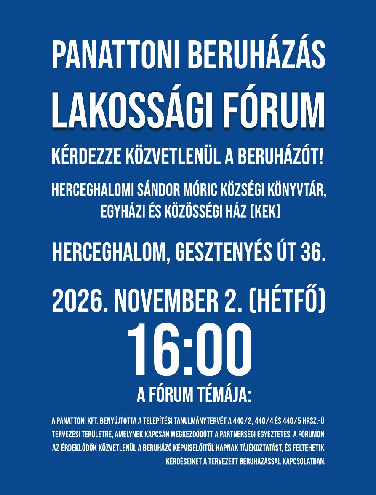
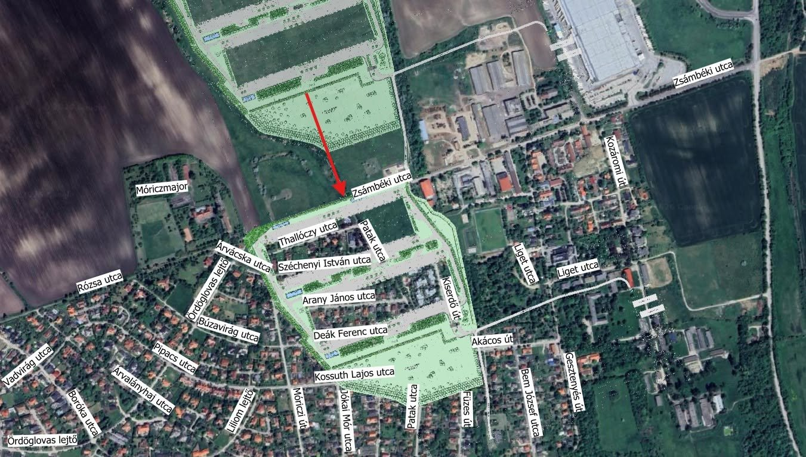

Lakossági fórum a Panattoni-beruházásról
A meghívó szerint a fórumon a beruházó képviselői tájékoztatnak, és válaszolnak a kérdésekre. Témája a Panattoni Kft. által a 440/2, 440/4 és 440/5 hrsz.-ú területre benyújtott Telepítési Tanulmányterv, amelyről partnerségi egyeztetés folyik. A szeptember 30-i hirdetmény a fórumot e partnerségi egyeztetés lezárásaként tűzte ki: ez az utolsó nyilvános alkalom, hogy a lakosok feltételeket mondjanak a szerződés aláírása előtt.
Kérdésedet október 30-ig, péntek este 8 óráig írd meg kommentben a Facebook-felhívás alatt (a kérdésszerkesztő segít megfogalmazni); a fórum előtt írásban eljuttatjuk az önkormányzatnak.
Érdemes kérni, hogy a kérdések és a válaszok a jegyzőkönyvbe kerüljenek, és hogy amire a helyszínen nincs válasz, arra írásban válaszoljanak. A kérdések egy része nem a beruházóra, hanem a képviselő-testületre tartozik (szerződés, pénzbeli hozzájárulás, Zsámbéki út): ezekre az önkormányzattól kérjünk választ.

Hol tart most az ügy?
A tanulmányterv írásos véleményezése október 15-én lezárult. A következő nyilvános alkalom a november 2-i lakossági fórum, amelyet a hirdetmény „a partnerségi egyeztetés lezárásaként” tűzött ki.
Tárgyalás a környezetvédelmi perben várható
A kormányhivatal 2024-es döntése elleni perben ezen a tárgyaláson érdemi döntés várható. A 2026. szeptember 10-i tárgyaláson az önkormányzat, amely maga is felperes, nem jelent meg.
Lakossági fórum a KEK-ben várható
KEK (Sándor Móric Községi Könyvtár, Egyházi és Közösségi Ház), Gesztenyés út 36. A meghívó szerint a beruházó képviselői tájékoztatnak és válaszolnak a kérdésekre. A fórumon elhangzó észrevételeket jegyzőkönyv rögzíti. A lakosok itt mondhatják el, milyen feltételek nélkül ne legyen aláírva a szerződés.
Újra lehet kérdezni a fórum előtt határidő
Október 30-án, pénteken este 8 óráig kommentben várjuk a kérdéseket a Facebook-felhívás alatt, lehetőleg azzal együtt, hogy a beruházótól vagy az önkormányzattól kérdeznéd. A beérkező kérdéseket hozzáadjuk a címzett szerint rendezett kérdéssorhoz, és a fórum előtt írásban eljuttatjuk az önkormányzatnak. Ami ezután érkezik, azt a fórumon szóban tesszük fel.
Lezárult az első kérdésgyűjtési kör
A herceghalmi lakosok kérdéseit témák szerint rendezve, írásban juttatjuk el az önkormányzatnak, azzal a kéréssel, hogy a beruházó a fórumon írásban válaszoljon.
Polgármesteri levél az országgyűlési képviselőnek
A levél kéri, hogy a képviselő „álljon az ügy élére”, és segítsen háromoldalú egyeztetést indítani a minisztérium, az állami vagyonkezelő és az önkormányzat között. Új javaslat: az állami föld előbb az önkormányzathoz kerüljön, és az cserélje el a beruházóval. A levél szerint a tanulmányterv hivatalos benyújtása szeptember 24-én megtörtént, és az önkormányzatnak „nincsenek olyan jogosítványai”, amelyekkel a beruházást megakadályozhatná.
Lejárt az írásos véleményezés határideje; tévéinterjú
Ugyanezen a napon került adásba a polgármesteri interjú a Buda Környéki Televízióban. Az interjú sem a határidőt, sem a fórum időpontját nem említette.
Újabb levél az agrárminiszternek
Az önkormányzat megküldte a telekcseréről szóló 143/2026. számú határozatot. A július 6-i és szeptember 21-i levelekre a polgármester szerint érdemi válasz nem érkezett.
A testület megerősítette a telekcsere kezdeményezését
143/2026. (X.6.) határozat, határidő nélkül. Az állam 2022 óta háromszor utasította el a cserét, legutóbb 2026. március 4-én.
Hirdetmény a Telepítési Tanulmánytervről
A hirdetmény táblázatban sorolja fel, mely szabályokat kellene enyhíteni. Véleményezési határidő: október 15.; fórum: november 2.
A tanulmányterv felkerült az önkormányzat honlapjára
Egy lakossági közérdekűadat-igénylés és az ennek nyomán indított per után. Korábban csak személyes betekintésre volt elérhető.
Hivatalosan benyújtották a tanulmánytervet
A polgármester október 15-i levele szerint. A testületnek a hiánytalan benyújtástól számított 30 napon belül kell döntenie, de a lakossági véleményezés ideje ebbe nem számít bele.
Megérkezett a tanulmányterv „előzetes egyeztetés céljából”
A testületi ülés jegyzőkönyve szerint a formális benyújtás akkor még nem történt meg. A tervet a HA Tervstúdió Kft. készítette 2026 júliusában.
Nyitott kérdések
- Kié lesz a park, és ki tartja fenn?
- Lesz-e pénzbeli hozzájárulás, határidő és bankgarancia?
- Hány kamion jár majd naponta: a dokumentumokban 70 és 208 közötti számok szerepelnek.
- Csak az 1101-es út felől járnak-e majd a kamionok?
- 14,5 vagy 16 méter lesz az épületmagasság? A hirdetményben mindkét szám szerepel.
- Mikor dönt a testület a tanulmánytervről, és a fórum előtt vagy utána?
- Látható lesz-e a szerződéstervezet az aláírás előtt?
- Teljesülnek-e a testület saját, 35/2024. számú határozatának feltételei?
Mekkora, és milyen közel lesz?

Források: Telepítési Tanulmányterv (2026. július); a környezetvédelmi eljárás iratai (PE/KTHF/14808/2024), beruházói nyilatkozat III. (2024. október 18.); tervtanácsi vélemény.
Öt év, lépésről lépésre
Az önkormányzat saját jegyzőkönyvei és a hatósági iratok alapján. A szereplők szerint szűrhető.
Mit kér a beruházó?
Új, csak erre a telekre szabott építési övezetet (Gksz-8). A mai szabályok szerint a két csarnok nagyjából megépíthető; a lazítást a testület adhatja meg, és a lazítás az, amiért cserébe feltételeket lehet szabni.
Ezen felül: megszűnne a Zsámbéki úti 7,5 tonnás súlykorlátozás, részben törlődne a lakóterületet védő zöld „küszöb” (Zkk-1), és a módosítás egyszerűsített eljárásban történne. Forrás: az önkormányzat 2026. szeptember 30-i hirdetménye, Telepítési Tanulmányterv.
A mérleg két oldala
A falu adja
- Beépíthetőség 30 → 40%
- Épületmagasság 12 → 14,5 m
- Kötelező zöldfelület 35 → 25%
- A 7,5 tonnás súlykorlátozás megszűnése a Zsámbéki úton
- A lakóterületet, iskolát és víztornyot védő zöld küszöb részleges törlése
- Egyszerűsített eljárás, 10 napos lakossági véleményezéssel
A falu kap, a terv szövege szerint
- Kb. 5 hektáros park, amely „a fejlesztő tulajdonában marad”, önkormányzati tulajdonba csak „megállapodás, vagy vétel után” kerülhet
- A Zsámbéki út 2×2 sávos bővítése, összeg és határidő nélkül (becsült költség: 331,7 M Ft nettó)
- 16 méteres bekötőút
- „Bizonyos arányú részvállalás” a víztoronyhoz és a szennyvíztelephez, összeg nélkül
- Gyalogos-kerékpáros kapcsolat
Mennyit kértek máshol?
Háromszor kért, háromszor elutasított
Az önkormányzat 2022 márciusa óta azt kéri, hogy a beruházás állami földre, az autópálya mellé költözzön. A beruházó 26,88 hektár belterületet adna, az állam 38,38 hektár külterületi szántót és rétet: 11,5 hektárral, 43%-kal többet.
| Elutasítás | Indok |
|---|---|
| 2022. október · Nemzeti Földügyi Központ | Termőföld csak termőföldre cserélhető. |
| 2024. február · Nemzeti Földügyi Központ | A földeket 2051. augusztus 31-ig bérlő használja, aki az eladáshoz nem járult hozzá; „az ügyet lezárták”. |
| 2026. március 4. · Agrárminisztérium | A beruházó jogi személyként termőföldet nem szerezhet; az egyik telket az M1 bővítése érinti. |
2024 márciusában a testületi ülésen felolvasott országgyűlési képviselői levél szerint a csere „nem kivitelezhető”, a beruházó pedig „telekcserében már nem gondolkodik”. A testület 2026. október 6-án ennek ellenére megerősítette a kezdeményezést (143/2026. határozat).
Új javaslat a polgármester 2026. október 15-i levelében: mivel jogi személy termőföldet nem szerezhet, az állam előbb az önkormányzatnak adná át a 019/2, 019/17, 019/18, 019/19 és 019/23 hrsz.-ú szántókat, és a művelésből való kivonás után az önkormányzat cserélné el őket a beruházóval. Cserébe az önkormányzat vállalná, hogy egy korábbi fejlesztési területét mezőgazdaságivá minősíti vissza. A levél szerint a beruházó akkor hajlandó a cserére, ha az „viszonylag rövid idő alatt lebonyolítható”.
Mekkora a hatás, és ki vizsgálja?
A kormányhivatal 2024 decemberében úgy döntött, hogy nem kell teljes környezeti hatásvizsgálat. Ez ellen per folyik, amelyben egy lakos és az önkormányzat is felperes. Az építési zaj hatásterületét a különböző anyagok egyre nagyobbra becsülték.
Az építési zaj hatásterülete, méterben
Víz és közművek
- A napi 20 m³ ivóvíz a meglévő hálózatról „nem biztosítható”; a terv két fúrt kutat és víztisztítót számol.
- A szennyvíztelep „teljes kihasználtsággal” működik; a beruházás a szabad kapacitás 22%-át venné el.
- A csapadéktározó 1 120 m³, a vízügy kb. 1 200 m³-t kért.
- Talajvíz 1–1,5 méteren, 5,5–8 méteres bevágások.
Természet és park
- 15 védett madárfaj fészkel a területen; a nagy kócsag táplálkozóterülete.
- A park négy fafaja mind vízparti vagy ártéri faj, öntözési terv nélkül.
- 2026 nyarán a csapadék a sokéves átlag 36%-a volt: 1901 óta a legszárazabb nyár.
- A takarás a lakóházak felől reálisan 10–15 év alatt alakul ki.
2026 nyara: a csapadék a sokéves átlag százalékában
Amit mondtak, és amit a papírok mutatnak
A 2026. október 15-i tévéinterjú állításai, összevetve az önkormányzat saját irataival. Nem a beruházás mellett érvelünk: aki védekezni akar, annak tudnia kell, mi van a kezében.
| Elhangzott | Az iratokban |
|---|---|
| Az önkormányzatnak „nincs beleszólása”, a paramétereket „nem tudja módosítani”. | A szeptember 30-i hirdetmény táblázatban sorolja a kért lazításokat. A helyi építési szabályzatot, a szerződést és a változtatási tilalmat csak a testület módosíthatja. |
| „5 hektáros zöld felület” a lakóházak felé. | A hirdetmény szerint a park tulajdonát majd a szerződés „határozza meg”; a tanulmányterv szerint a fejlesztőé marad. |
| „Mindent megteszünk” a telekcseréért. | A cserét az állam háromszor elutasította. Az október 6-i előterjesztés ezeket nem említi. |
| Azért perelünk, mert a beruházás „erős és komoly környezeti hatással jár”. | A hivatal október 9-én azt írta egy lakosnak, hogy „nem környezetvédelmi hatóság”. A szeptember 10-i tárgyaláson az önkormányzat nem jelent meg. |
| Nemet mondani „több milliárdos” kártérítést jelentene. | A mai szabályok szerint megépíthető csarnokot valóban nem lehet megtiltani. A lazítás viszont kedvezmény, és feltételhez köthető. |
| Október 15-i levél: az önkormányzatnak „nincsenek olyan jogosítványai”, amelyekkel a beruházást megakadályozhatná. | Ez a mai szabályok szerint megépíthető csarnokra igaz. A kért lazítások (40%-os beépítés, 14,5 m, 25% zöld, a súlykorlát megszüntetése) viszont mind testületi döntések, és feltételhez köthetők. |
| Október 15-i levél, időrendi áttekintés: a július 6-i és szeptember 21-i levelekre „érdemi válasz nem érkezett”. | Az áttekintés július 6-án kezdődik. A minisztérium 2026. március 4-i elutasítása, amely szerint jogi személy termőföldet nem szerezhet, nem szerepel benne. |
| A 2024-es testületi határozat (35/2024.) | Részletes zaj-, por-, rezgés- és forgalmi számítások nélkül a terv „nem nyerhet támogatást”. A tanulmánytervben ma sincs napi kamionszám. |
Az interjú idézetei gépi átiratból valók, a videón ellenőrizhetők: Buda Környéki Televízió, 2026. október 15.
Mi van még a kezünkben?
Rövid, feliratos összefoglaló az ügyről, tizenkét jelenetben. Kattints a képre vagy a Lejátszás gombra; a jelenetek között a fejezetlistából is ugorhatsz. Az összefoglaló a 2026. október 17-i állapotot mutatja.
Mi van még a kezünkben?
Hol tart a logisztikai beruházás, mit kap érte a falu, és miért ilyen gyenge eddig az önkormányzat alkupozíciója.
26,9 hektár a falu szélén
- 2005 óta beépíthető gazdasági övezet (Gksz-1), magántulajdon
- Két csarnok, egyenként kb. 38 000 m², 14,5 m magas
- 239 személyautó- és 47 kamionállás
- A 2023-ban épült óvoda kb. 200 méterre van
Amit csak a testület adhat meg
A tanulmányterv lazítást kér a szabályokon. Mindegyik a képviselő-testület döntése, egyiket sem kaphatja meg a beruházó magától.
Emellett: új, egyedi övezet és 15 hektáros, oszthatatlan telek.
Az 5 hektáros park nem ajándék
A tervezett csarnokok a teljes telken pontosan beleférnek a mai 30%-ba: 29,99%.
Ha a parkot leválasztják, ugyanaz a csarnoktömeg a maradék telken már ~37%. Ezért kell a 40%.
A park önkormányzati tulajdonba csak „megállapodás, vagy vétel után” kerülhet; az övezet vendéglátást és autós mozit is megengedne.
Máshol pénzt és határidőt kaptak
- Park: a fejlesztő tulajdonában, fenntartás nyitott
- Zsámbéki út bővítése: összeg és határidő nélkül
- Víztorony, szennyvíztelep: „bizonyos arányú” részvállalás
- Bankgarancia, kötbér: nincs
Ami biztosan megérkezik
Egy terv, három elutasítás
Termőföld csak termőföldre cserélhető, a kért földeket 2051-ig egy agrárcég bérli, és az egyik telket az M1 bővítése érinti.
A beruházó 2024-ben: „telekcserében már nem gondolkodik”. 2026-ban hat önkormányzati levél maradt érdemi válasz nélkül.
✕ Nemzeti Földügyi Központ: elutasítva
✕ Nemzeti Földügyi Központ: az ügyet lezárták
✕ Agrárminisztérium: elutasítva
A testület „megerősíti” a szándékát – határidő, értékbecslés, beruházói nyilatkozat nélkül
Öt pillanat, amikor elcsúszott az alku
A beruházó a telekvásárlás előtt bemutatkozik a polgármesternek. Változtatási tilalom nem születik – egy másik területen ugyanez a testület tilalommal érte el a kisebb beépítést.
A beruházó szerződéstervezete négy hónapig tárgyalás nélkül áll; a testület csak 2024 márciusában veszi elő.
A tilalom mellé 3,2 millió forintért megrendelt szabályzatmódosítás „a tulajdonosok igényével összhangban” készül.
Az önkormányzat saját pénzén készíti elő a bekötőutat – amelynek telkeit a beruházó 2024-ben maga ajánlotta megvenni.
A környezetvédelmi per tárgyalásán az önkormányzat sem személyesen, sem jogi képviselővel nem jelenik meg.
Tíz háznál tudott nemet mondani
20 millió forint felajánlott fejlesztési hozzájárulás mellett is
ElutasítvaIndok: a Zsámbéki út terhelhetősége
csarnok, napi akár 192 kamionnal
0 Ft kérveFix hozzájárulást a testület eddig nem fogalmazott meg
Ami elhangzik, és ami le van írva
Amíg nincs aláírás, van alku
A kedvezményekért cserébe a szerződésben rögzíthető:
- célhoz kötött pénz: víztorony, szennyvíz, zajvédelem
- a Zsámbéki út és a bekötőút teljes költsége, határidővel
- bankgarancia és kötbér minden vállalásra
- a park önkormányzati tulajdona vagy bejegyzett közhasználata
- kamionforgalom csak az 1101-es út felől
- zajmérés az iskolánál és az óvodánál
- minden vállalás átszáll az új tulajdonosra
- nyilvános feltétellista a döntés előtt
Legyünk ott, és kérdezzünk
- Kérjünk nyilvános feltétellistát, mielőtt a testület dönt
- Kérjük, hogy az önkormányzat jelenjen meg a perben
- Minden kérdésre kérjünk írásos választ
A múlt döntésein nem tudunk változtatni. A szerződésen még igen.
A kisfilm nyilvános iratokon alapul, tisztségeket említ, neveket nem. A 29,99% → ~37% a tanulmányterv adataiból számolt becslés, a park pontos területétől függ. A „hat levél” és a telekcsere állása az október 17-i állapotot tükrözi; az azóta érkezett leveleket a fenti fejezetek tartalmazzák.
Az ördöglovas vázlatfüzete
Gróf Sándor Móric, az „ördöglovas” – akinek családjáé volt Csonkatebe pusztája, a mai Herceghalom – képzelt monológban meséli el a csínytevéseit, a falu múltját, és azt, mivé válhat a település a Panattoni-beruházással. Az elején nevetni fogsz, a végén már nem.
A szerződést még nem írták alá. Amíg nincs aláírás, van alku.
- Gyere el a lakossági fórumra: 2026. november 2., hétfő 16:00, KEK, Gesztenyés út 36.
- Felszólaláskor mondd be a neved és a herceghalmi címed, hogy partnerként kerülj a jegyzőkönyvbe.
- Kérdezz számra, határidőre, vállalásra, és kérd írásban a választ.
- Ha kimaradt egy kérdés, írd meg kommentben a Facebook-felhívás alatt október 30-ig, péntek este 8 óráig.
- A korábbi kérdésgyűjtés témái és a javasolt feltételek itt olvashatók: Kérdezz a fórum előtt.
Források
- Herceghalom Község Önkormányzata: hirdetmény a Telepítési Tanulmánytervről, 2026. szeptember 30. (herceghalom.hu, Panattoni-ügy rovat)
- Herceghalom Község Önkormányzata: „Panattoni ügy időrendben” (herceghalom.hu)
- Telepítési Tanulmányterv, 440/5 hrsz., HA Tervstúdió Kft., 2026. július
- Képviselő-testületi jegyzőkönyvek, 2022–2026 (kiemelten 2022.05.03., 2023.02.14., 2024.03.05., 2024.06.27., 2024.12.17., 2025.07.15., 2026.03.03., 2026.05.28.)
- 35/2024. (III.05.) képviselő-testületi határozat, hiteles kivonat
- 27/2024. (XII.17.) és 5/2026. (III.4.) önkormányzati rendelet
- Közmeghallgatások: 2023.11.14., 2024.11.26., 2025.11.24.
- Környezetvédelmi eljárás iratai, PE/KTHF/14808/2024
- Építési engedélyezési eljárás adatlapja, azonosító: 202400104192, Pest Megyei Kormányhivatal (építésügy), benyújtva 2024. december 16. (e-építés eljáráskereső, lekérdezve 2026. október 24.)
- Tulajdonilap-másolat, Herceghalom 440/5 hrsz., Pest Megyei Kormányhivatal Földhivatali Főosztály, 2026. október 4. (INYER/TULLAP/20261004/17169)
- A 2026. október 6-i testületi előterjesztés a telekcseréről, és a polgármesteri levelek (2026. július–szeptember)
- A Polgármesteri Hivatal 2026. október 9-i válasza lakossági adatigénylésre
- Polgármesteri levél az országgyűlési képviselőnek a telekcseréről, 2026. október 15. (iktatva október 16.)
- Buda Környéki Televízió, polgármesteri interjú, 2026. október 15.
- Szabadidőpark-koncepcióterv, 2025. augusztus; HungaroMet: 2026. nyári éghajlati összesítő
- Más települések településrendezési szerződései: Gyömrő, Biatorbágy, Soroksár/Alsónémedi